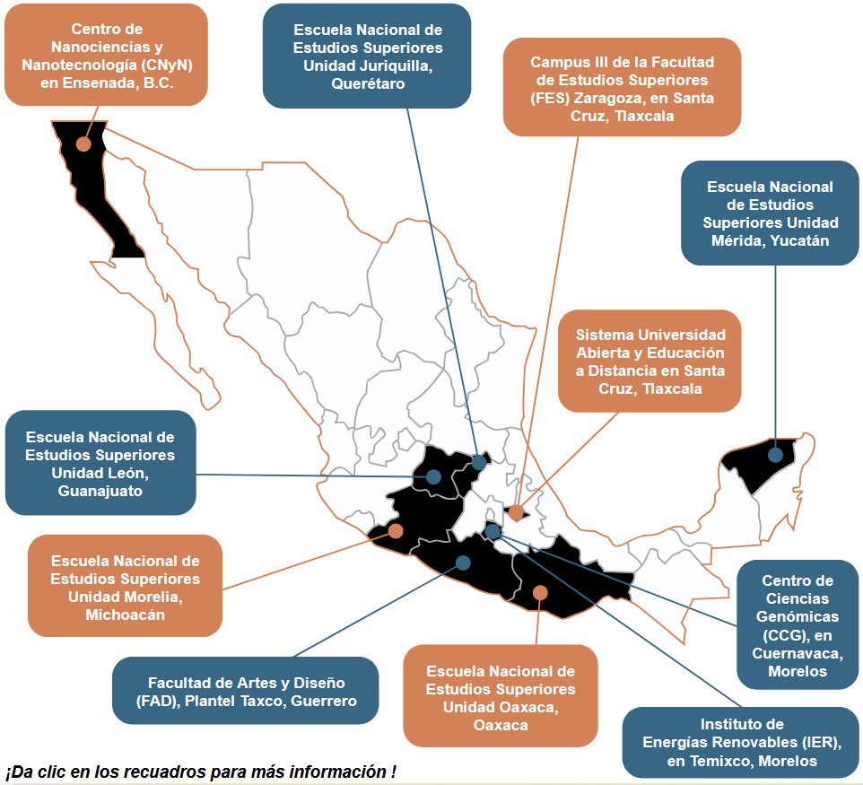

Las 15 licenciaturas mas demandadas
La UNAM imparte 133 carreras y que el 71% de las solicitudes de ingreso se concentran sólo en las 15 licenciaturas que a continuación se enlistan, convirtiéndolas en las más demandadas y de más difícil ingreso:
Ingreso a Licenciatura
El Concurso de Selección se realiza 2 veces al año. Para registrarte y presentar el examen de admisión, debes seguir las indicaciones señaladas en las Convocatorias y sus Instructivos.
Convocatoria de enero (Concurso de Selección Ingreso a Licenciatura 2026)
Para realizar el examen en mayo-junio. Corresponde al ingreso a carreras que se imparten en los Sistemas Escolarizado y Universidad Abierta y Educación a Distancia (SUAyED), modalidades Abierta y a Distancia.
Convocatoria de septiembre (Concurso de Selección Noviembre 2026)
Para realizar el examen en noviembre. Corresponde al ingreso a carreras que se imparten en el Sistema Universidad Abierta y Educación a Distancia (SUAyED), modalidades Abierta y a Distancia.
Requisitos para ingresar a la UNAM
- Tener concluido totalmente el nivel bachillerato con promedio general mínimo de 7.0.
- Obtener el mayor número de aciertos de los 120 posibles en el Examen de Admisión, que les permita ser personas seleccionadas en la carrera-plantel que registren.
- Si es el caso, cumplir con los requisitos adicionales establecidos en el plan de estudios de la carrera con Prerrequisitos o de Ingreso Indirecto que se registre.
- Para carreras que se imparten en la modalidad a Distancia del Sistema Universidad Abierta y Educación a Distancia (SUAyED), es importante considerar que su estudio implica el uso de métodos, técnicas, habilidades, estrategias y medios de comunicación diferentes a los utilizados en la educación presencial, por lo que se sugiere cursar el Programa de Apoyo al Ingreso (PAI).
IMPORTANTE
El corte de aciertos para la selección de personas aspirantes en cada concurso lo determina la demanda de ingreso y el cupo ofertado en cada carrera-plantel, pero sobre todo, la preparación de quienes presentan el examen año con año, por lo que nadie puede decir que la Universidad “pide” o “establece” de manera previa un número de aciertos mínimos para ingresar a cada carrera que oferta. Recuerda que, a mayor número de aciertos, mayor posiblidad de obtener un lugar en la carrera-plantel que registres.
La elección de carrera es una decisión de vida
Antes de elegir, infórmate sobre las licenciaturas que se ofertan, principalmente sobre la o las de tu interés, revisando cuidadosamente el plan de estudios y preguntándote:
¿Qué te gusta y para qué eres bueno?
¿En qué planteles se imparte?
¿Cuáles son los perfiles de ingreso y egreso?
La carrera que quiero ¿es de alta demanda?
¿Cómo están conformados los planes de estudio?
¿Cuántos años duran las carreras?
¿Hay posgrado?
¿Dónde podré trabajar y cuál será mi salario?
Campus foráneos de la UNAM
Nuestra Universidad Nacional sigue expandiéndose y ampliando su oferta educativa, por lo que te ofrece licenciaturas que se imparten en campus foráneos.

¿Clases sin aulas?
La mayoría de nosotros conoce el Sistema Escolarizado, donde asistes a la escuela
de lunes a viernes y/o sábados, y las clases son impartidas por profesorado frente
al grupo.
Sin embargo, hay quienes ya tienen otras responsabilidades y no desean ausentarse
mucho tiempo de casa o de su centro de trabajo, para ellas/os, una buena opción es
estudiar en el SUAyED (Sistema Universidad Abierta y Educación a Distancia) que
se divide en:
Modalidad Abierta
Es un sistema flexible, es decir, se imparte de manera semipresencial, donde asistes a asesorías programadas por la entidad académica correspondiente a tu carrera. La comunicación con el profesorado puede ser de manera presencial, telefónica, videoconferencia, chat o vía correo electrónico.
Modalidad a Distancia
Es un sistema flexible, es decir, se imparte en línea, donde el aprendizaje es generalmente por medios tecnológicos (videoconferencias, aulas virtuales). La comunicación con el profesorado puede ser vía telefónica y en ocasiones presencial. Para ingresar a cualquier carrera de esta modalidad, se sugiere cursar el Programa de Apoyo al Ingreso (PAI), considerando que esta modalidad de estudio implica el uso de métodos, técnicas, habilidades, estrategias y medios de comunicación diferentes a los utilizados en la educación presencial.
¿Carreras de ingreso indirecto? ¿Cuáles son?
Estas licenciaturas requieren que seas persona seleccionada y concluyas tu inscripción en una carrera de las señaladas en su plan de estudios, así como participar y ser persona aceptada en el proceso interno de selección que la facultad, escuela, centro o instituto donde se imparte la carrera de ingreso indirecto determine al efecto, el cual puede realizarse antes, a la par o después del período de inscripciones de la carrera origen; de no ser persona aceptada, podrás continuar tus estudios en la carrera en que resultaste persona seleccionada y estás inscrita. Se sugiere revisar el plan de estudios y visitar la página web de la entidad académica respectiva.
- Ciencia de Datos (IIMAS)
- Ciencia de la Nutrición Humana
- Ciencia Forense
- Ciencias Genómicas (Centro de Ciencias Genómicas y ENES Unidad Juriquilla)
- Cinematografía
- Diseño Industrial (sólo en la Facultad de Arquitectura)
- Fisioterapia (sólo en la Facultad de Medicina)
- Informática (sólo en la Facultad de Contaduría y Administración)
- Ingeniería Aeroespacial (sólo en la ENES Juriquilla)
- Ingeniería en Energías Renovables (ENES Unidad Juriquilla e Instituto de Energías Renovables)
- Ingeniería Mecatrónica
- Ingeniería en Sistemas Biomédicos
- Investigación Biomédica Básica
- Nanotecnología (CNyN, Ensenada, Baja California)
- Negocios Internacionales (ENES Unidad Juriquilla y Facultad de Contaduría y Administración)
- Neurociencias (ENES Unidad Juriquilla y Facultad de Medicina)
- Química e Ingeniería en Materiales
- Tecnología (sólo en la Facultad de Estudios Superiores Cuautitlán)
¿Carreras con Prerrequisitos? O sea, ¿Cómo?
Son licenciaturas que establecen en su plan de estudios cumplir con anticipación, o a la par del Concurso de Selección, con ciertos requisitos adicionales. Conócelos a tiempo, revisa el plan de estudios y visita la página electrónica de la Facultad o Escuela correspondiente, evita el no poder inscribirte en la carrera por no cumplir con los prerrequisitos respectivos, aun cuando seas persona seleccionada:
- Carreras de la Facultad de Música.
- Carrera de Música y Tecnología Artística. ENES Morelia.
- Carreras de Enseñanza de Inglés y de Enseñanza de (Alemán), (Español), (Francés), (Inglés) o (Italiano) como Lengua Extranjera.
- Carreras de Lengua y Literaturas Modernas (Letras Alemanas, Letras Francesas, Letras Inglesas, Letras Italianas o Letras Portuguesas).
- Carrera de Lengua y Literaturas Modernas (Letras Inglesas), en la modalidad Abierta del SUAyED.
- Carrera de Teatro y Actuación.
- Carreras en Lingüística Aplicada y en Traducción.
- Carrera en Traducción. ENES León, Extensión San Miguel de Allende, Guanajuato.